03 Bjt
BJT
Symbolic representation of BJT.
Configurations of Transistor (npn) (active mode)
| Transistor configurations | I / P current (I) i | O / P current (I ) o | I / P voltage (V) i | O / P voltage (V ) o |
|---|---|---|---|---|
| Common Base (CB) | I E | I C | V BE | V CB |
| Common Emitter (CE) | I B | I C | V BE | V CE |
| Common Collector (CC) | I B | I E | V CB | V CE |
For AC → notation is i e For Total → notation is I e For DC → notation is I E
Operating modes of BJT
| Emitter Junction | Collector Junction | Region | Operation |
|---|---|---|---|
| FB | RB | Active | Amplifier |
| FB | FB | Saturation | ON switch |
| RB | RB | Cut-off | Off switch |
| RB | FB | Inverse active | attenuator |
𝐼 𝐶 Common base DC current gain (α) = 𝐼 𝐸 𝐼 𝐶 Common emitter DC current gain (β) = 𝐼 𝐵 𝐼 𝐸 Common collector DC current gain (r) = 𝐼 𝐵 I E = I C + I B Active vs Saturation region (npn transistor)
| Active region | Saturation region |
|---|---|
| 1) I = β I C B | I ≠ βI C B |
| 2) V = 0.7 V BE | V = 0.2 CE |
| 3) V = depends on Ckt CE | V = 0.7 BE |
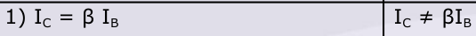
Procedure to find region of transistor Method 1 Assume active region
- 1) Apply k VL in Base-emitter Ckt & calculate I B
- 2) I C = βI B V BE = 0.7 V
- 3) Apply k VL in CE Ckt & calculate V CE
- 4) Now from V CE If V CE > 0.2 then active region If V CE < 0.2 then saturation region
Method 2 Assume saturation region → Apply k VL in base Ckt. & calculate I B → Apply k VL in CE Ckt & calculate I C min → V CE = 0.2
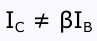
𝐼 𝐶 𝑚𝑖𝑛
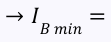
β → If I B min < I B → (saturation region) If I B min > I B → (active region)
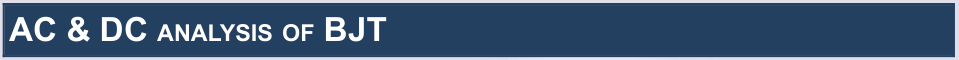
C E = Emitter bypass capacitor C C = Coupling capacitor
For DC analysis
- 1) frequency (w) = 0, so capacitors are open Ckt 𝐼 𝐶 𝑉 𝑇

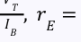
𝑉 𝑇, 𝑟 π = 𝐼 𝐸 g m = trans conductance r E = AC emitter resistance r π = AC base resistance
For AC analysis
- 1) Using hybrid-π model (IF C E is absent)
Same structure modelling for CE, CC, CB or whether npn or pnp.
- 2) By using h-parameter
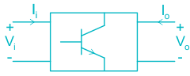
[] = ℎ 𝑖 ℎ 𝑟 ℎ 𝑓 ℎ 𝑜 [] 𝐼 𝑖 𝑉 𝑜 [] 𝑉 𝑖 𝐼 𝑜 Where, 𝑉 𝑖 𝐼 𝑜 𝑉 𝑖
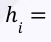
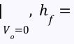
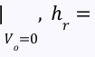
𝐼 𝑖 | 𝐼 𝑖 | 𝑉 𝑜 | 𝐼 𝑖 =0 𝐼 𝑜
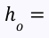
𝑉 𝑜 |
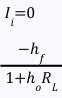
1) → Current gain 𝐴 𝐼 =
- 2) Z in = R B + h i + A I h r R L → Input impedance 𝑅 𝐿 3) → Voltage gain 𝐴 𝑉 = 𝐴 𝐼 𝑅 𝑖
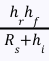
4) → output admittance 𝑦 𝑜 = ℎ 𝑜 −
High frequency analysis (for CE amplifies only) C π = input capacitance between E & B C μ = capacitance between C & B
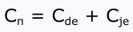
𝐶𝑗 𝑒 0
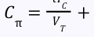
𝑚 () 𝑉 𝐵𝐸 1− 𝑉 𝑜𝑒 V oe = 0.9 V
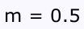
𝐶 µ 𝑜
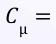
𝑚 () 𝑉 𝐶𝐵 1+ 𝑉 𝑜𝑐 V oc = 0.7 V m = 0.2 to 0.5
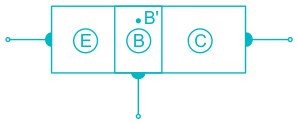
For external connections use ohmic contact. → A C > A E > A B (area)
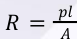
𝐴 → R B > R E > R c → Base width should be very less
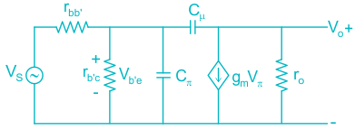
→ CE short circuit current gain (R L = 0)

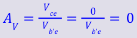
𝐼 𝑠𝑐
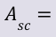
𝐼 𝑓 →𝑡𝑎𝑟𝑔𝑒𝑡
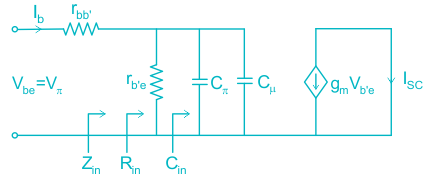
()
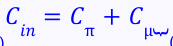
𝑅 𝑖𝑛˙ = 𝑟 𝑏'𝑒 ⏟ 𝑍 𝑖𝑛˙ = 𝑟 𝑏'𝑒 || 𝐶 µ + 𝐶 π (𝑖𝑔𝑛𝑜𝑟𝑒 𝑟𝑒𝑠𝑖𝑠𝑡𝑎𝑛𝑐𝑒) (𝑖𝑔𝑛𝑜𝑟𝑒 𝑐𝑎𝑝𝑎𝑐𝑖𝑡𝑜𝑟)
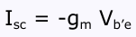
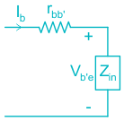
𝐴 𝑠𝑐 = −𝑔𝑚 …(1) 𝑗 𝑚˙
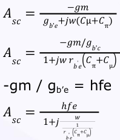
Remembers here r π ≠r b’e as r bb’ is there 𝑣 𝑏𝑒
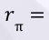
𝑖 𝑏 𝑣 𝑏'𝑒
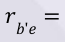
𝑖 𝑏 ' If r bb’ is ignored them r b’e = rπ
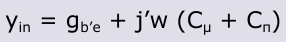
𝐼 𝑏
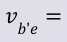
𝑗 𝑖𝑛 𝐼 𝑏
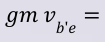
𝑗 𝑖𝑛 𝑔 𝑚 𝐼 𝑏
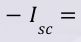
𝑗 𝑖𝑛 𝑔 𝑚
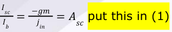
1 𝑓 β =
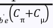
2π 𝑟 𝑏 𝐴 3d B cut-off frequency is the Frequency at which |
| or any gain become 𝐴 𝑠𝑐 2
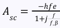
| | = ℎ𝑓𝑒 𝐴 𝑠𝑐
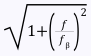
𝑓 ∠𝐴 𝑠𝑐 = 180° − 𝑓 β
| |𝐴 | at f = 0 = hfe 𝑠𝑐 | 180° |
|---|---|
| |𝐴 𝑠𝑐| at f = f = ℎ𝑓 2𝑒 β | 135° |
| |𝐴 | at f = ∞ = 0 𝑠𝑐 | 90° |
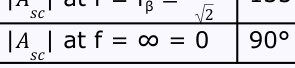
f T = unit gain B.W = frequency at which product of gain & frequency become 1.
2 () 𝑓 𝑓 at very high frequencies 𝑓 β ≫1;
≫1 𝑓 β
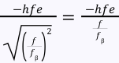
−ℎ𝑓𝑒 𝑓 β | | = f = operating frequency 𝐴 𝑠𝑐; 𝑓 Let f = f T; | | = 1 𝐴 𝑠𝑐
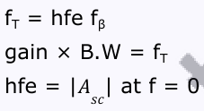
So f β = B.W.
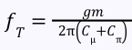
B.W of common base amplifier BW = 3d B cut off frequency of CB = f α = (1 + β) f β
Low frequency analysis of amplifier In L.F, coupling capacitors cannot be ignored For finding effect of C 1, put C 2 & C 3 as S.C For C 2, put C 1 & C 3 as S.C and For C 3, put C 1 & C 2 as S.C
Due to three capacitors we have 3 poles or break points.
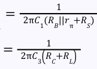
𝐶 1, 𝑓 𝑝 1 𝐶 3, 𝑓 𝑝 3 1 𝐶 2, 𝑓 𝑝 2 =
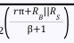
2π𝐶 2
Equivalent resistance is Theremin resistance found by seeing it from capacitor by felting I.S = 0 (R C + R C) is resistance seen between Terminals of C 3 when V s = 0.